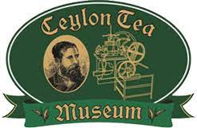

Website: www.ceylonteamuseum.com
Address: Hantana Road
Visiting Hours: 8 30am - 3 30pm Tuesday-Saturday
The Ceylon Tea Museum is located in the former Hanthana Tea Factory,
which was originally constructed in 1925. It is situated 3 km (1.9 mi)
south of Kandy.
The museum contains exhibits on tea pioneers, including James Taylor and
Thomas Lipton, as well as much vintage tea-processing paraphernalia. The
ground floor houses 19th century colonial generators, rollers, dryers,
fermentation tables, sorting machines, etc. The second floor houses the
library and museum. The third floor has a shop whilst the top floor
contains a restaurant and tea rooms.
The Ceylon Tea Museum is located in the former Hanthana Tea Factory, which was originally constructed in 1925. It is situated 3 km (1.9 mi) south of Kandy. Hanthana was one of the first successful areas to cultivate tea following the failure of coffee production on the island. In 1959 the Tea Research Institute of Ceylon established a sub station on land leased from the Hanthana Estate, similar to the Passara sub station established in the 1920s. The Hanthana Station was set up to cater to the needs of mid-country tea plantations with regard to the physiology, entomology of tea and in particular the identification of drought resistant clones and the insect pest shot-hole borer.
The Ceylon Tea Museum was incorporated on 9 January 1998, under Section 21 of the Companies Act of 1982, in a move initiated by Clifford Ratwatte (Chairman of the Sri Lanka Tea Board). The museum was formally opened on 1 December 2001. The four storey tea factory had been abandoned for more than a decade before it was refurbished in 2001 by the Sri Lanka Tea Board and the Planters’ Association of Sri Lanka.
Website: www.ceylonteamuseum.com
Address: Hantana Road
Visiting Hours: 8 30am - 3 30pm Tuesday-Saturday